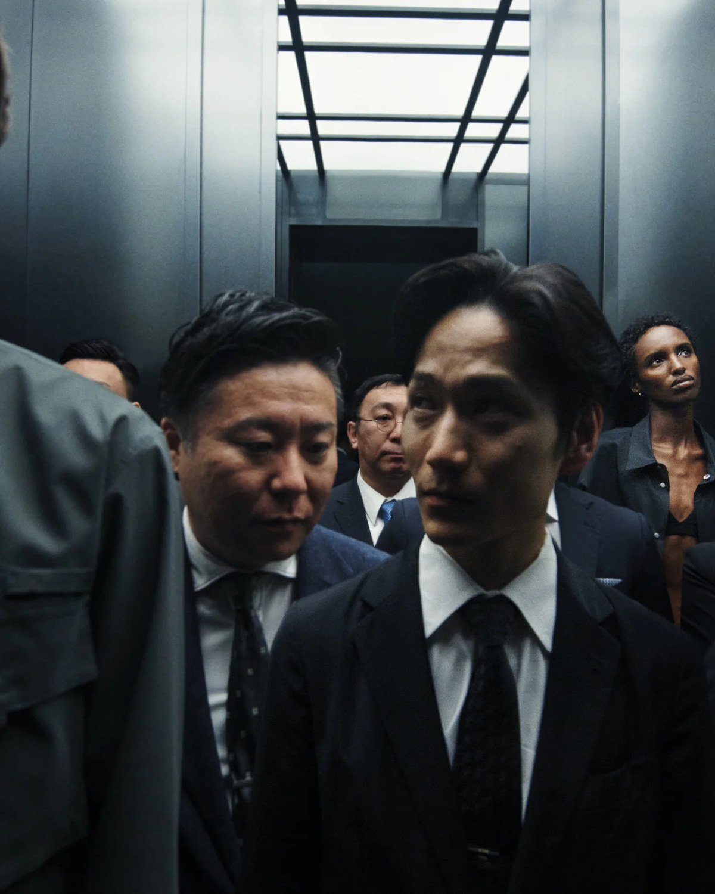
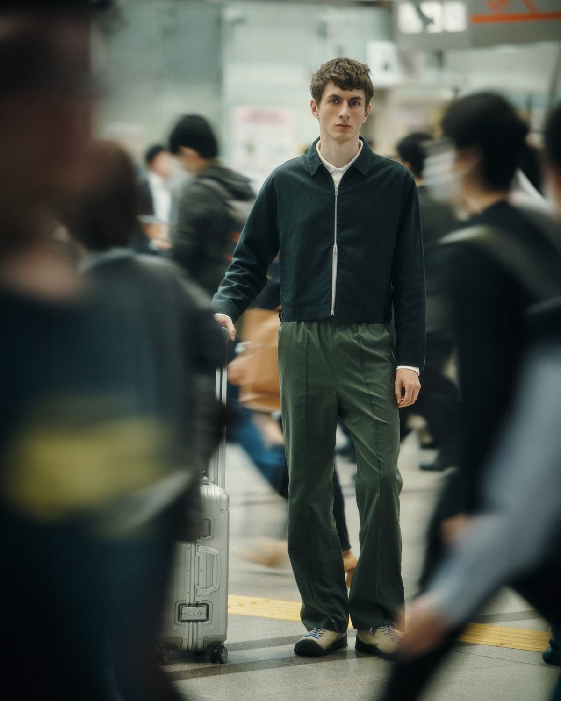
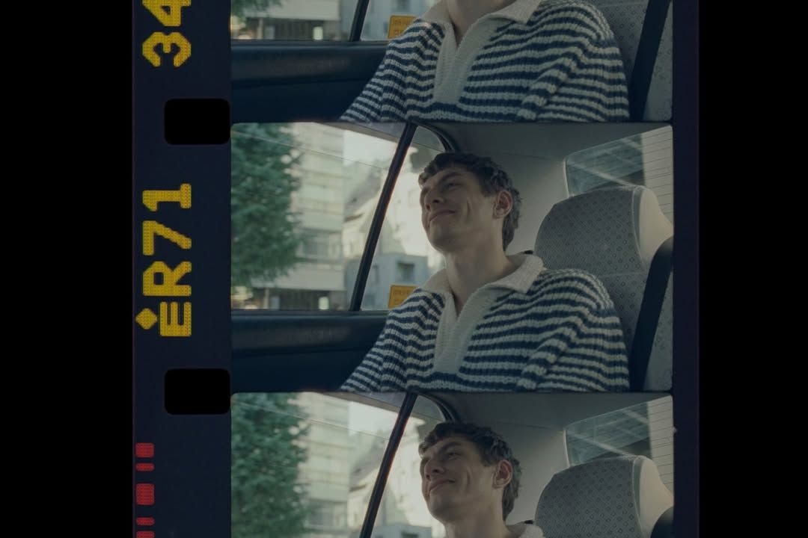
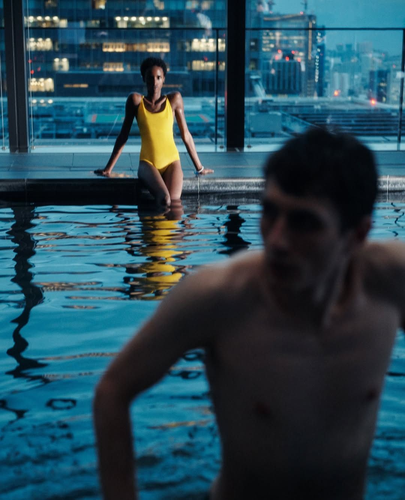
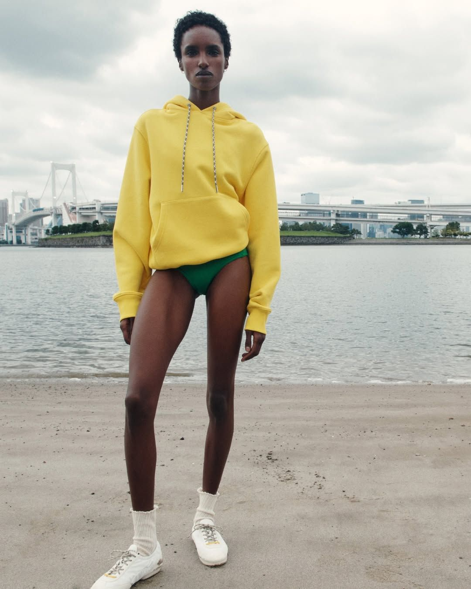

做这个系列的颜色时，Kim Jones 没有翻色卡。他打开自己的一只袋子，里面是 30 多个安缦的行李牌：每住过一家，摘一个，攒了很多年。他说，每一家安缦的颜色都不一样。
这个系列的颜色，就从这堆牌子里来。35 件衣服，对应 30 多个目的地的风景。这是 Aman Essentials 成立以来第一次请设计师做联名，对一家以克制著称的酒店集团来说，这个动作本身比单品更值得看。
谁在安缦住了三十几次
Kim Jones 的履历不用多介绍：Louis Vuitton 男装，Dior Men，Fendi 女装。去年离开 Dior 之后，他回到自己的伦敦工作室。
比履历更值得说的是他和安缦的关系。他住过 30 多家安缦，东京安缦，他说是他在东京的家。
“I'm a proper Aman Junkie.”—— Kim Jones，接受 Vogue 采访
系列概念叫 Lines of Passage：走过的路线，穿过的环境，还有把人连起来的那些时刻。听上去很虚，落到衣服上是另一回事，往下看。

面料比联名更值得看
全系列最硬核的是 Utility Vest 和同款长裤：用菲律宾的蕉麻（Abacá）织成轻量斜纹，再生种植的纤维，自带一种粗糙的、植物感的手感。
针织部分用的是回收塑料瓶制成的纱线，抓绒来自再生棉，运动款用了回收弹性纤维。Jones 对 Vogue Business 说，他们把“度假装”和“可持续”当成这个系列的底：不管是在 Amanpulo 下海，还是走进 Amangani 的山里，或者穿着它走在东京街上，同一件衣服都成立。

早泳、徒步、晚餐，不用回房间换
安缦的一天大概是这个节奏：早上下海，中午去徒步，晚上吃饭。这个系列就是照着这个节奏做的。
功能性的日装、轻的针织、无重量的泳衣、真丝晚装分件，互相能叠穿。Jones 给的标准很具体：早上穿去海滩，晚上直接穿去正式晚餐，中间不用回房间。

四个颜色名，四个目的地
颜色名直接取自安缦各地的风景：Ensign Blue、Mineral Blue、Cyber Yellow、Goji Berry。不是凭空想的色号，是一家一家住出来的。Cyber Yellow 那一格，就是泳池边的颜色。


买之前，先看这条
Aman Essentials 的 CEO Kristina Romanova 说，以前酒店的零售空间更像纪念品商店，是体验的附加品；现在他们把它当生活方式品牌做。这个系列的意义大概就在这里：住酒店的人，终于可以有除了浴袍之外的选择。
- 针织 polo $1,290
- Jersey Short $590
- 泳衣 $640
- Leggings $520
- Windbreaker $1,545（报道价）
- 真丝睡衣套装 $3,505（报道价）
渠道：Dover Street Market、部分安缦精品店、shop.aman.com。截至发稿，美区多数码已 sold out，下单前以官网为准。价格均为官网美元标价，未含税与运费。
编辑手记
安缦在全球 21 个国家有 36 家酒店。这一次，它把其中 30 多家的风景，装进了 35 件衣服。酒店开始卖衣服这件事，接下来只会更多，值得盯着看。
事实核对：早期报道中提及的 Parley for the Oceans 合作已被 Vogue 更正否认，本文未采用；“报道价”条目来自媒体报道，未在官网逐条核对。